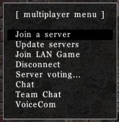
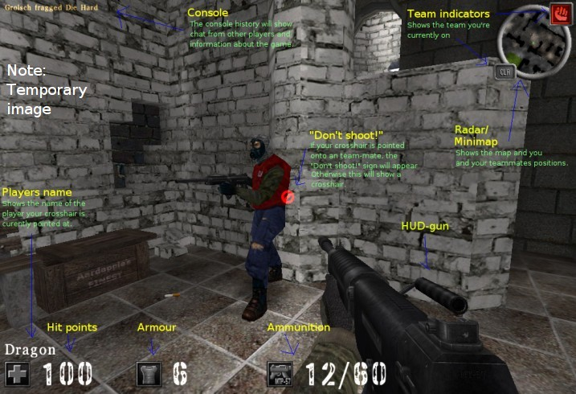
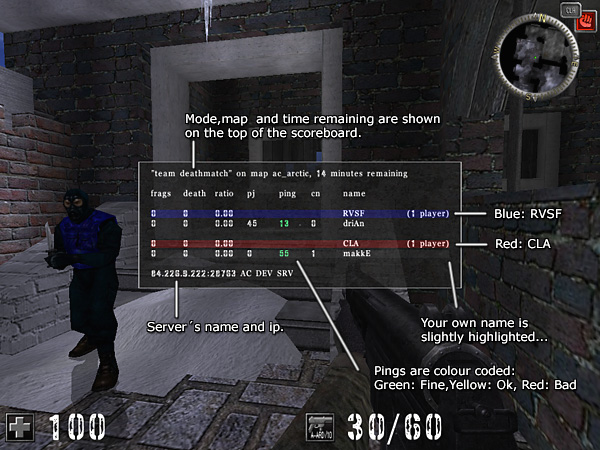

The interface
The console
Many actions in AssaultCube can be done in a console. Although not entirely necessary to use it (the menu can be used to do most important commands) it can be very useful and often easier/faster to use it. To get a console press T to open the chat prompt. You can use it as console if you put a “/” (slash) at its beginning followed by a command. As example, type this command into the console:
This will increase the size of your crosshair. Check the reference to see all gameplay relevant commands you can use through CubeScript.
Hint: Press F11 to get a bigger console history.
Menus
In game, press ESC to access a menu. From there you can access almost anything and use all sorts of actions, like joining multiplayer games and changing settings, as well as using text inputs, checkboxes and menu sliders.
As an example, in multiplayer you can use the set mode/map submenu to vote on a new mode/map. Further customizations and actions can be done to these menus using CubeScript.
In some circumstances, there may be more on a menu than what can be held. Pressing page-up/page-down on it will show the next page of the menu. You can tell if there is another page by the arrow at the bottom of the screen.
The HUD
HUD stands for Head-up display and is a common term in video gaming. The HUD is used to indicate things such as health, armour, etc when playing the game.

A new feature implemented in AssaultCube 1.00 shows the direction of where damage inflicted upon you originated from by using small red markers at the edge of the screen.
The capture-the-flag HUD is slightly different to the normal one, as can be seen here.
{kind=link}
The scoreboard
The scoreboard will tell you (horizontally in this order):
- CTF flags captured (if playing capture the flag).
- Frag count.
- Death count.
- Ratio of frags to deaths
- Current ratio of frags to deaths.
- Packet jump (PJ).
- The ping between the player and the server.
- CN (Client number).
- The players name.

Pressing page-up/page-down on the scoreboard will show the next page on the scoreboard. You can tell if there is another page (this happens when there are many people on the server) by the arrow at the bottom of the screen.
Packet jump (PJ) is the amount of milliseconds that have passed since you have received updates from players. A high (for example: 950) or variable (for example: The PJ is at 40 then jumps to 1000 and then 300 then 550) packet jump is bad for game play, because these players may become difficult targets and "warp" around the map (warp means they disappear/reappear out of nowhere). If someone's packet jump is bad enough, their PJ number will turn into the word LAG and they'll stand still and start saluting because they are lagging so badly. Special note: You cannot see your own packet jump.
Ping is the amount of time in milliseconds that it takes for your packets of data to get back and forth from the server. A lower ping is a better ping.
Client number is a number that is given out automatically by the server. There is nothing particularly special about it other than allowing people to identify players easier.
If someones name turns up in red, then they are an administrator of that server and have full control over it.
Players names that are in grey, are currently in dead/spectate mode.
Mini-map
The mini-map shows your location in the map. To activate it, hold down ALT.
You can find yourself on the mini-map by looking for the symbol in green. As well as showing your location on the map, it will also show your team-mates locations (if you're playing a team-based game). X's mark dead team-mates, pulsating icons show team-mates that are attacking.

If you're playing CTF, then red and blue flags will show up in their respective locations on the mini-map, unless the enemy has your flag (then you won't be able to see it) OR if your team has the enemies flag (It will show which team-member is carrying the flag).